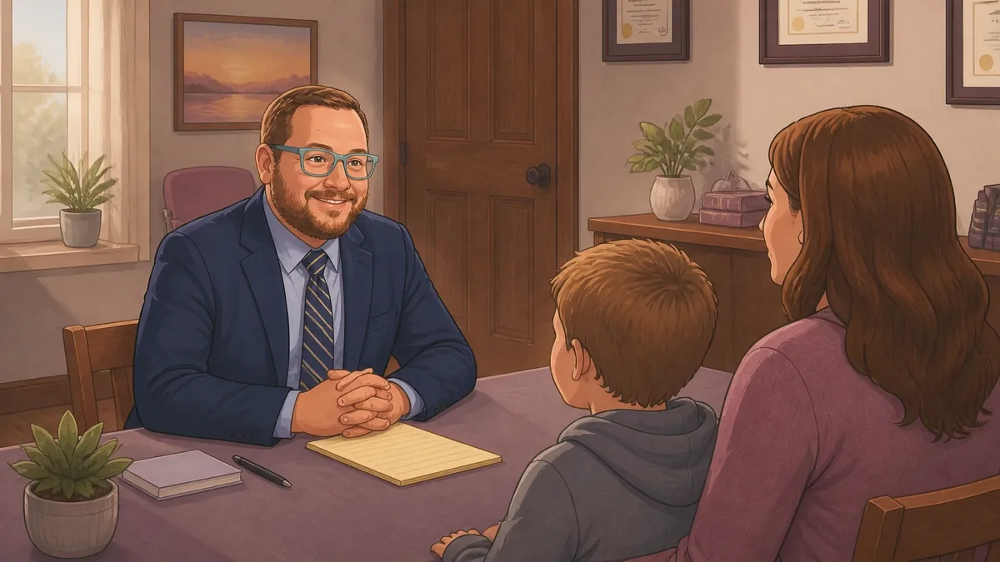
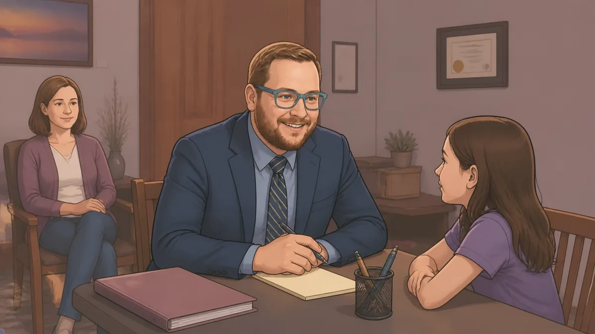
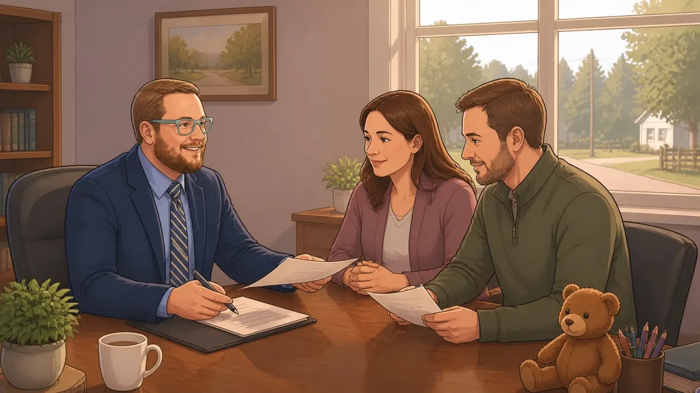

What Is a Guardian ad Litem, and Why Are They Talking to My Kids? A Jennings County Parent's Guide

If a Guardian ad Litem, or GAL, has been appointed in your case, you may feel worried. You may wonder what the GAL is looking for, what they'll tell the judge, and whether your child is in trouble.
These are normal questions.
A GAL is usually appointed to help the court understand what a child needs. The GAL looks at the child's situation and makes recommendations based on the child's best interests.
This guide explains what to expect in plain English. It applies to many custody, divorce, parenting-time, and family law cases in Indiana. Some juvenile or CHINS cases may also involve a child advocate. The exact duties depend on the court's written appointment order.
What Is a Guardian ad Litem?
A Guardian ad Litem is a person appointed by the court to represent and protect a child's best interests.
The GAL isn't appointed to take the mother's side or the father's side. The GAL's focus is the child.
In Indiana, a GAL may be a lawyer, mental health professional, or another trained person who meets the state's requirements. The judge's order should explain:
- Why the GAL was appointed
- What the GAL must investigate
- What issues the GAL should address
- How the GAL will be paid
- How long the appointment will last
A GAL becomes involved because the judge needs more information about the child and family. This may happen when parents strongly disagree about custody or parenting time. It may also happen when the court has concerns about safety, school, medical care, substance use, relocation, or the child's emotional needs.
The Indiana Supreme Court provides a helpful Guide to Working with a Guardian ad Litem.

Why Is the GAL Talking to My Child?
The GAL must learn about the child's life. That usually means speaking with the child in a way that fits the child's age and maturity.
The GAL may ask about:
- The child's daily routine
- School and activities
- Time spent with each parent
- What the child enjoys
- What makes the child feel safe
- Any problems the child is experiencing
- The child's wishes or concerns
This doesn't mean your child gets to decide the case. A child's opinion may matter, but the GAL looks at the whole situation.
The GAL shouldn't pressure the child to choose between parents. The child shouldn't feel responsible for the court's decision.
The GAL may also meet with your child privately. That's part of the process. Parents should give the child room to speak honestly without interruption.
What Does a GAL Actually Do?
The GAL conducts an independent investigation. The investigation may include:
Talking with both parents
The GAL will usually speak with each parent. You'll have a chance to explain your concerns and provide information about your child.
The GAL may ask about:
- Your child's health and school needs
- Your parenting schedule
- Communication with the other parent
- Any safety concerns
- Your home routine
- Important events in the family's history
The GAL may ask difficult questions. Try to answer calmly and honestly.
Meeting with the child
The GAL must have reasonable in-person contact with the child. The number and type of meetings can vary based on the child's age, needs, and the court's order.
Visiting homes
A GAL may visit each parent's home. This allows the GAL to see where the child sleeps, studies, and spends time.
A home visit isn't always a search for a perfect house. The GAL is usually looking for a safe and suitable setting for the child.
Speaking with other people
The GAL may contact people who know the child. This can include:
- Teachers
- School counselors
- Doctors
- Therapists
- Daycare providers
- Relatives
- Coaches
- Other caregivers
The GAL may give more weight to people who have personally observed the child and your parenting. A neutral teacher or medical provider may offer more useful information than a friend who only knows one side of the dispute.
Reviewing records
The GAL may review records related to the child's needs. These may include:
- School records and attendance
- Report cards
- Medical records
- Counseling records
- Police reports
- Child welfare records
- Parenting-time messages
- Other court documents
Give your lawyer a copy of anything you provide to the GAL. If you're not sure whether a record matters, ask your lawyer before sending it.
Writing a report
After the investigation, the GAL may prepare a written report for the court. The report may include:
- Information about the child
- A summary of interviews
- Relevant records
- The child's stated wishes, when appropriate
- The GAL's recommendations
The recommendations may address custody, parenting time, school issues, counseling, substance testing, safety rules, or other services.
A written report is generally filed with the court and provided to the parties or their lawyers. In custody, divorce, and parenting-time cases, the GAL should usually have the report to the court and parties at least 10 days before the hearing. If that doesn't happen, the hearing may need to be continued. CHINS and other juvenile cases can run on a different timeline, so ask your lawyer what applies to your specific case.
What a GAL Doesn't Do
A GAL has an important role, but that role has limits.
A GAL Isn't Your Lawyer
The GAL doesn't give you legal advice. The GAL isn't your personal attorney and doesn't protect your private legal interests.
Talk with your own lawyer before making decisions about your case. Your lawyer can help you respond to questions, prepare for hearings, and address problems with a GAL report.
This holds true no matter who's serving as the GAL. If I'm appointed as the GAL in your case rather than representing you as your attorney, I'm acting as a neutral investigator for the court (not as either parent's advocate), so you'll still want your own lawyer for legal advice.
A GAL Isn't Your Child's Therapist
The GAL may ask about the child's feelings and experiences. But the GAL isn't providing counseling.
Your child should answer honestly, but you shouldn't promise that everything said to the GAL will stay private. Communications with a GAL generally aren't confidential in the same way that communications with your lawyer or therapist may be.
A GAL Doesn't Make the Final Decision
The GAL makes recommendations. The judge makes the final decision.
A judge may agree with the GAL, disagree with the GAL, or order something different. If you believe the GAL report is wrong, your lawyer can help you respond with documents, witnesses, or testimony.
How Should Parents Prepare?
The best approach is simple: be honest, respectful, and focused on your child. If you also have a hearing coming up, my guide on preparing for an Indiana custody hearing covers many of the same basics.
Before meeting with the GAL:
- Read the court's appointment order.
- Write down important dates and facts.
- Gather relevant school, medical, and counseling information.
- Make a short list of witnesses who personally know your child.
- Save important messages and parenting-time records.
- Ask your lawyer what information may help your case.
- Be ready to explain your child's daily routine.
During the process:
- Answer questions directly.
- Admit mistakes when they exist.
- Don't exaggerate.
- Stay calm, even if the other parent makes claims you believe are false.
- Respond to scheduling requests on time.
- Keep the GAL updated about major changes.
- Tell the GAL about real safety concerns.
- Keep the focus on what your child needs.
The GAL's investigation is only as complete as the information available. You should cooperate, but you should also protect your legal rights by speaking with your own attorney when you have questions.
Don't Coach Your Child
This is one of the most important rules.
Don't tell your child what to say to the GAL. Don't practice answers. Don't ask the child to repeat your version of events.
You can explain the process in a simple way:
"A person from the court is going to talk with you. You can be honest. You're not in trouble. You don't have to choose between your parents."
Don't question your child after the meeting. Don't punish the child for something they said. Don't ask whether the GAL liked your answers or your home.
Coaching can harm your child and damage your credibility with the GAL and the court.
Common Mistakes Parents Make
Parents often make the process harder by:
- Treating the GAL like an enemy
- Refusing to provide information
- Sending long, angry messages
- Making claims without proof
- Blaming the other parent for every problem
- Asking the child to take sides
- Posting about the case online
- Ignoring calls or emails from the GAL
- Hiding important facts
- Assuming the GAL is on one parent's side
The GAL will notice how you communicate and cooperate. This doesn't mean you must agree with everything the GAL says. It means you should handle disagreements through the proper legal process.

How Long Does the GAL Process Take?
There's no single timeline for every case.
A focused investigation may take a few weeks. A more complex case may take longer. The timing can depend on:
- The number of children involved
- The child's age and needs
- The number of people the GAL must contact
- How many records must be reviewed
- Whether home visits are needed
- Whether the case involves safety concerns
- How quickly everyone responds
- The date of the next hearing
The GAL usually remains involved until the court ends the appointment. The appointment order may set a deadline or describe a specific event that ends the GAL's role.
Ask the GAL for an estimated timeline and expected costs. Indiana courts may require the parents to share the GAL's fees. The judge may divide the cost in different ways. Ask about the required deposit and any additional charges.
At Chris Doran Law LLC, I believe in being clear about practical details, including possible travel fees when work outside the local area is needed.
A Local Perspective for Jennings County Families
I'm a small-town lawyer who serves families throughout Jennings County, including North Vernon, Vernon, Butlerville, Scipio, Hayden, and Commiskey.
I've represented parents through GAL investigations in custody, divorce, and CHINS cases, and I've also served as a court-appointed Guardian ad Litem myself. Seeing the process from both sides gives me a practical understanding of what a GAL investigation is looking for and how it fits into the bigger picture of a family law case.
A GAL investigation is often just one part of a larger custody case, alongside things like mediation or, in some situations, a private judge.
Every case is different. The goal isn't to "win" against the GAL. The goal is to make sure the court has accurate information and understands what your child needs.
If you're facing a custody, divorce, parenting-time, or juvenile matter, I'll listen to your concerns and explain your options in plain language. Learn more about family law services or read about the Guardian ad Litem role.
Need Help With a GAL Case?
A GAL appointment can feel stressful, but you don't have to handle the process alone.
Before you speak with the GAL, contact your own lawyer for advice about your rights and responsibilities. At Chris Doran Law LLC, I meet with clients by appointment. You can schedule an appointment online or contact the office.
I serve families in North Vernon, Vernon, Butlerville, Scipio, Hayden, Commiskey, and throughout Jennings County. Travel to surrounding areas may be available, with fees discussed in advance.
This article provides general information about Guardian ad Litem proceedings in Indiana. It's not legal advice and doesn't create an attorney-client relationship. The court's appointment order controls the GAL's specific duties in your case.